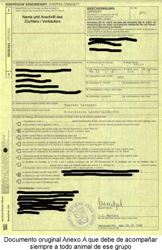

|
CITES - CEE
CLASIFICACI�N DE ESPECIES - NORMATIVA
Dentro de la Comunidad
Econ�mica Europea, rige la Convenci�n de Berna, normativa
comunitaria en la cual se establecen par�metros mas
restrictivos para algunos animales, hay varios Anexos, el
Anexo A es equivalente al CITES I y el Anexo B es
equivalente al CITES II, �que importancia tiene eso? pues
animales que est�n incluidos en CITES II pueden estar
incluidos en el Anexo A y eso implica que, dentro de la CEE,
a efectos de documentaci�n, posesi�n, transporte, etc.
tienen el mismo tratamiento que si fueran CITES I, debiendo
tener cada animal su propia hoja amarilla de documentaci�n,
estar identificado mediante microchip, etc.
Se muestra en primer lugar un resumen de la normativa
comunitaria y luego se han a�adido unas tablas
clasificatorias, la primera tabla muestra en que Ap�ndice
CITES est�n las diferentes especies de tortugas terrestres,
la segunda tabla contempla todas las especies de tortugas y
en que anexo de la CEE est�n incluidas.
Ap�ndice I: Est�n incluidas en este ap�ndice las
especies amenazadas de extinci�n que est�n, o puede
ser, afectadas por el comercio.

Ap�ndice II: Est�n incluidas en este ap�ndice las
especies que aunque actualmente no est�n amenazadas de
extinci�n puede llegar a ella, a menos que el comercio este
sujeto a una regulaci�n estricta.
Ap�ndice III: Est�n incluidas en este ap�ndice
aquellas especies que aunque no est�n amenazadas de
extinci�n son objeto de trato especial en el pa�s que las ha
inscrito en este Ap�ndice.
De lo anterior se deduce que la tenencia de tortugas esta
sujeta a una normativa, que debemos cumplir escrupulosamente
por el bien de todos, loa informaci�n que sigue esta sacada
de la Secretaria de Estado de comercio exterior responsable
en Espa�a de este control.
REGISTRO DE COLECCIONES
ANIMALES Y VEGETALES
Todas aquellas colecciones animales y vegetales de
especimenes de especies incluidas en los Anexos del
Reglamento (CE) 338/97 que se dediquen o puedan dedicarse a
cualquier tipo de actividad comercial, deben ser controladas
por la Autoridad administrativa CITES a efectos de las
certificaciones necesarias.
CONTROL DE CR�A EN CAUTIVIDAD Y REPRODUCCI�N ARTIFICIAL
El interesado deber� presentar una solicitud de
certificaci�n de cr�a en cautividad o reproducci�n
artificial de especimenes de especies incluidas en los
anexos del Reglamento (CE) 338/97. Junto con la solicitud se
deber�n aportar los siguientes documentos:
- Relaci�n de especimenes presentes en sus instalaciones
- Documentaci�n acreditativa de la adquisici�n de los mismos
- Descripci�n de las instalaciones, sistemas de cr�a o
reproducci�n artificial y m�todos de marcado en su caso.
- Para el caso de cr�a en cautividad, documentaci�n que
acredite estar dado de alta en el registro de n�cleos
zool�gicos.
Una vez realizada, por parte del CATICE, la correspondiente
inspecci�n de los espec�menes y una vez comprobada la
conformidad de la documentaci�n aportada, los espec�menes
quedar�n registrados en el CATICE. A partir de ese momento,
el interesado deber� comunicar al CATICE cualquier
modificaci�n que se produzca en los espec�menes presentes en
sus instalaciones as� como cualquier modificaci�n de los
datos aportados.
Asimismo, en el caso de cr�a en cautividad, deber�n
notificar todas las puestas y eclosiones de huevos o
nacimientos de cr�as tan pronto como �stas tengan lugar y,
en todo caso, en un plazo no superior a siete d�as
naturales. Igualmente deber�n facilitar el acceso a las
instalaciones correspondientes as� como las muestras y los
controles necesarios para la realizaci�n de los an�lisis
seg�n lo dispuesto en el art�culo 25 del Reglamento (CE)
939/97.
El CATICE correspondiente proceder� a certificar las
operaciones de cr�a en cautividad o reproducci�n artificial
seg�n los casos.
Sinopsis de las diferencias entre las disposiciones de la
UE y de CITES
Las disposiciones que contienen los reglamentos de la UE
relativos al comercio de especies de la fauna y flora
silvestres son m�s amplias que las contenidas en CITES en
una serie de aspectos. Aconsejamos consultar los textos de
los reglamentos o el Documento de Referencia.
ANEXOS
El Reglamento (CE) n� 338/97 consta de cuatro anexos (A-D)
que contienen especies no incluidas en CITES.
|
Anexo |
Especies
incluidas |
|
Anexo A |
*
Todas las especies del Ap�ndice I
de CITES
*
Algunas especies de los Ap�ndices
II y III de CITES para las que la
UE ha adoptado medidas internas m�s estrictas.
*
Algunas especies
no incluidas en CITES
|
|
Anexo B
|
*
Todas las restantes especies del
Ap�ndice II de CITES
*
Algunas especies del Ap�ndice III
de CITES
*Algunas especies no incluidas en
CITES |
|
Anexo C |
*
Todas las
restantes especies del Ap�ndice III de CITES |
|
Anexo D |
*
Algunas especies
del Ap�ndice III de CITES respecto de las cuales la UE ha
presentado una reserva
*Algunas especies no incluidas en
CITES |
PERMISOS Y NOTIFICACIONES
DE IMPORTACI�N
- Para las especies incluidas en los Anexos A y B
se exige un permiso de importaci�n
- Para las especies incluidas en los Anexos C y D
se exige una notificaci�n de importaci�n.
CONDICIONES DE ALOJAMIENTO
Una de las condiciones exigidas para emitir un permiso de
importaci�n de especimenes de especies incluidas en el Anexo
A y en el Anexo B es que "el lugar de alojamiento previsto
en el lugar de destino de un esp�cimen vivo est� equipado de
manera adecuada para conservarlo y darle el debido cuidado".
CONDICIONES DE TRANSPORTE
El Reglamento (CE) n� 338/97 y la Directiva 95/29/CEE del
Consejo sobre la protecci�n de los animales durante el
transporte se ajustan a las normas de la IATA relativas al
transporte a�reo de animales vivos y a las directrices sobre
transporte de CITES, que son jur�dicamente vinculantes.
El transporte a la Comunidad, desde ella o dentro de ella de
especimenes incluidos en los Anexos A y D deber� efectuarse
de tal modo que se reduzca al m�nimo el riesgo de lesi�n,
perjuicio para la salud o malos tratos a dichos especimenes,
y de conformidad con la normativa comunitaria sobre la
protecci�n de los animales durante el transporte.
La Comisi�n tambi�n puede imponer restricciones a las
importaciones de especimenes de las especies incluidas en el
Anexo B que sean muy vulnerables a la mortalidad durante el
transporte.
COMERCIO INTERNO DE ESPECIES INCLUIDAS EN EL ANEXO A
El Reglamento (CE) n� 338/97 contiene disposiciones
especiales relativas al comercio dentro de la Comunidad
Europea, es decir, dentro de los distintos Estados miembros,
as� como entre ellos.
Est�n prohibidas las siguientes actividades con respecto a
especimenes incluidos en el Anexo A:
* compra
* oferta para la compra
* adquisici�n con fines comerciales
* exposici�n al p�blico con fines comerciales
* utilizaci�n con fines lucrativos
* venta
* tenencia para la venta
* puesta en venta
* transporte para la venta.
Los �rganos de gesti�n de los Estados miembros pueden
autorizar excepciones espec�ficas a lo anterior mediante la
concesi�n de certificados de manera individualizada y en
determinadas condiciones. Por ejemplo, puede autorizarse una
excepci�n en el caso de un esp�cimen adquirido antes de que
fuera aplicable la normativa correspondiente.
La Comisi�n ha establecido una serie de excepciones
generales. El procedimiento en estos casos es m�s sencillo o
no se precisa certificado. Ejemplo de estas excepciones son
los intercambios entre instituciones cient�ficas con fines
no comerciales, es decir, para la investigaci�n o la
ense�anza.
ANEXO D
El Anexo D contiene especies incluidas en el Ap�ndice
III de CITES respecto de las cuales uno o m�s Estados
miembros de la UE han presentado una reserva, as� como las
especies respecto de las cuales se justifica una vigilancia
de las importaciones comunitarias.
TABLA DE CLASIFICACI�N DE
LAS TORTUGAS TERRESTRES
|
Especie |
Subspecies |
Status |
|
Tortugas
Asi�ticas |
|
Geochelone
elegans |
|
CITES II |
ANEXO
B |
|
Geochelone
platynota |
|
CITES II |
ANEXO
B |
|
Indotestudo elongata
|
|
CITES II |
ANEXO
B |
|
Indotestudo
forsteni |
|
CITES II |
ANEXO
B |
|
Manouria
emys |
M. e. emys
M. e.
phayrei |
CITES II |
ANEXO
B |
|
Manouria
impressa |
|
CITES II |
ANEXO
B |
|
Tortugas
Americanas |
|
Geochelone
carbonaria |
|
CITES II |
ANEXO
B |
|
Geochelone
chilensis |
|
CITES II |
ANEXO
B |
|
Geochelone
denticulata |
|
CITES II |
ANEXO
B |
|
Gopherus
agassizii |
|
CITES II |
ANEXO
B |
|
Gopherus
berlandieri |
|
CITES II |
ANEXO
B |
|
Gopherus flavomarginatus |
|
CITES
I |
ANEXO
A |
|
Gopherus
polyphemus |
|
CITES II |
ANEXO
B |
|
Tortugas de las
islas Galapagos |
|
Geochelone nigra |
G. n. abingdonii
G. n. becki
G. n. chathamensis
G. n. darwini
G. n. ephippium
G. n. gunther
G. n. hoodensis
G. n. microphyes
G. n. nigrita
G. n. palapagoensis
G. n. phantastica
G. n. vandenburghi
G. n. vicina |
CITES
I |
ANEXO
A |
|
Tortugas del Atol�n
de Aldabra |
|
Geochelone
gigantea |
|
CITES II |
ANEXO
B |
|
Tortugas
Europeas |
|
Testudo
graeca |
T. g. graeca
T. g. ibera
T. g. nikolskii |
CITES II |
ANEXO
A |
|
Testudo
hermanni |
T. h. boettgeri
T. h.
hermanni |
CITES II |
ANEXO
A |
|
Testudo
horsfieldi |
|
CITES II |
ANEXO
B |
|
Testudo
marginata |
|
CITES II |
ANEXO
A |
|
Tortugas
Africanas |
|
Chersina
angulata |
|
CITES II |
ANEXO
B |
|
Geochelone
pardalis |
G. p.
pardalis
G. p.
babcocki |
CITES II |
ANEXO
B |
|
Geochelone
sulcata |
|
CITES II |
ANEXO
B |
|
Homopus
areolatus |
|
CITES II |
ANEXO
B |
|
Homopus
bergeri |
|
CITES II |
ANEXO
A |
|
Homopus
boulengeri |
|
CITES II |
ANEXO
B |
|
Homopus
femoralis |
|
CITES II |
ANEXO
B |
|
Homopus
signatus |
|
CITES II |
ANEXO
B |
|
Kinixys
belliana |
|
CITES II |
ANEXO
B |
|
Kinixys
erosa |
|
CITES II |
ANEXO
B |
|
Kinixys
homeana |
|
CITES II |
ANEXO
B |
|
Kinixys
natalensis |
|
CITES II |
ANEXO
B |
|
Malacochersus tornieri
|
|
CITES II |
ANEXO
A |
|
Psammobates geometricus |
|
CITES
I |
ANEXO
A |
|
Psammobates
oculiferus |
|
CITES II |
ANEXO
B |
|
Psammobates
tentorius |
|
CITES II |
ANEXO
B |
|
Testudo kleinmanni |
|
CITES
I |
ANEXO
A |
|
Tortugas de
Madagascar |
|
Pixys planicauda |
|
CITES
I |
ANEXO
A |
|
Geochelone radiata |
|
CITES
I |
ANEXO
A |
|
Geochelone yniphora |
|
CITES
I |
ANEXO
A |
|
Kinixys
belliana |
|
CITES II |
ANEXO
B |
|
Pyxis
arachnoides |
|
CITES II |
ANEXO
B |
|
En rojo CITES I o
Anexo A |
Cuadro de todas las
tortugas y anexo de la CEE en que est�n incluidas
|
Anexo A |
Anexo B |
Anexo C |
EMYDIDAE
Batagur baska
Clemmys muhlenbergi
Geoclemys hamiltonii
Kachuga tecta
Melanochelys tricarinata
Morenia ocellata
Terrapene coahuila
TESTUDINIDAE
Geochelone nigra
Geochelone radiata
Geochelone
yniphora
Gopherus flavomarginatus
Homopus bergeri
Malacochersus tornieri
Psammobates geometricus
Pyxis planicauda
Testudo graeca
Testudo hermanni
Testudo kleinmanni
Testudo marginata
Testudo werneri
CHELONIIDAE
Cheloniidae spp.
DERMOCHELYIDAE
Dermochelys
coriacea
TRIONYCHIDAE
Trionyx ater
Trionyx
gangeticus
Trionyx hurum
Trionyx nigricans
CHELIDAE
Pseudemydura umbrina
|
DERMATEMYDIDAE
Dermatemys mawii
EMYDIDAE
Annamemys annamensis
Callagur borneoensis
Clemmys insculpta
Cuora spp
Emys orbicularis
Heosemys
grandis
Heosemys depressa
Heosemys spinosa
Hieremys
annandalii
Kachuga spp.
(Excepto las especies incluidas en el Anexo A)
Leucocephalon
yuwonoi
Mauremys
caspica
Mauremys leprosa
Mauremys mutica
Orlitia
Borneensis
Pyxidea mouhotii
Siebenrockiella
crassicollis
Terrapene spp. (Excepto las especies incluidas en el
Anexo A)
Trachemys scripta elegans
TESTUDINIDAE
Testudinidae spp.
(Excepto las especies incluidas en el Anexo A)
TRIONYCHIDAE
Chitra
spp.
Lissemys punctata
Pelochelys spp.
PELOMEDUSIDAE
Erymnochelys
madagascariensis
Peltocephalus dumeriliana
Podocnemis spp.
PLATYTERNIDAE
Platysternon
megacephalum
|
TRIONYCHIDAE
Trionyx triunguis
PELOMEDUSIDAE
Pelomedusa subrufa
Pelusios adansonii
Pelusios castaneus
Pelusios gabonensis
Pelusios niger |
La abreviatura <spp> sirve para
designar a toda la especie de un tax�n superior.
En rojo significa que no esta incluido en su equivalente
CITES |
 |
 |
|